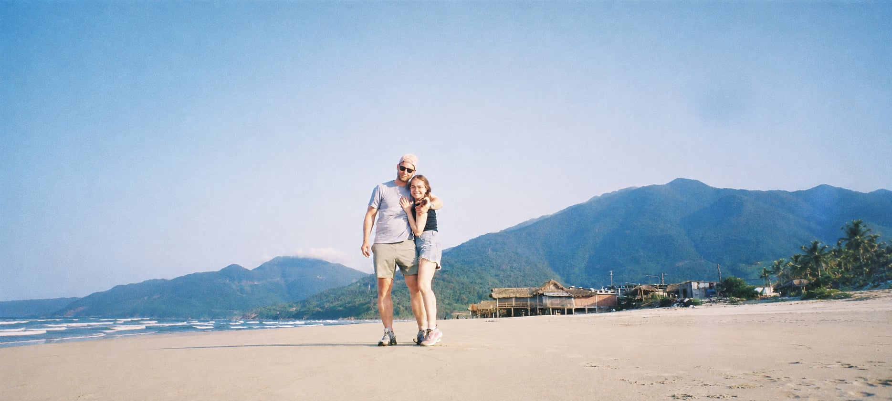
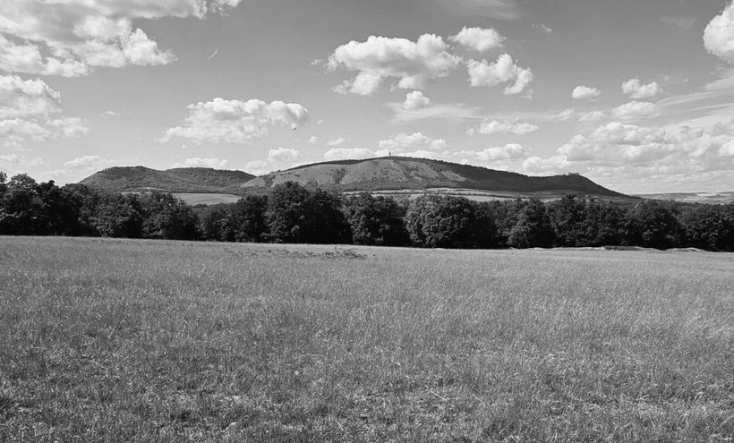

Odjezd autobusů
Od kina Mikulov do Valtic.

Náš společný den začne v pravé poledne v kostele Nanebevzetí Panny Marie ve Valticích. Následovat bude tradiční svatební oběd a oslava na zámku Mikulov, která bude plná dobrého jídla, pití a zábavy až do rána.
Moc se na vás těšíme! A pokud budete mít chuť začít slavit o něco dříve, budeme rádi, když se k nám připojíte už v pátek 28. 5. večer v baru U Zajíce na neformální předpárty.
Od kina Mikulov do Valtic.
Kostel Nanebevzetí Panny Marie ve Valticích.
Zámek Mikulov.
A oslava až do rána.

Odvoz na obřad z Mikulova do Valtic je zajištěn společnými autobusy. Odjezd od kina Mikulov bude v 10:45.
Po skončení obřadu vás poté autobusy dopraví k zámku Mikulov, kde bude probíhat oslava.
Pokud budete potřebovat pomoci s hledáním ubytování, neváhejte se na nás obrátit. Rádi vám poradíme a pomůžeme najít vhodné místo.
Pro zájemce jsme navíc domluvili možnost společného ubytování v Hostelu Králíkárna, který se nachází přímo na náměstí. V případě zájmu nás kontaktujte.
hostelkralikarna.czDress code není pevně stanoven. Budeme rádi, když zvolíte slavnostní oděv podle svého vlastního stylu, ve kterém se budete cítit dobře.
Jen vás prosíme, abyste bílou, béžovou a krémovou barvu přenechali pro tento den nevěstě.
Prosíme, pokud máte možnost, nechte tentokrát děti i domácí mazlíčky doma a užijte si náš den jen ve společnosti dospělých.